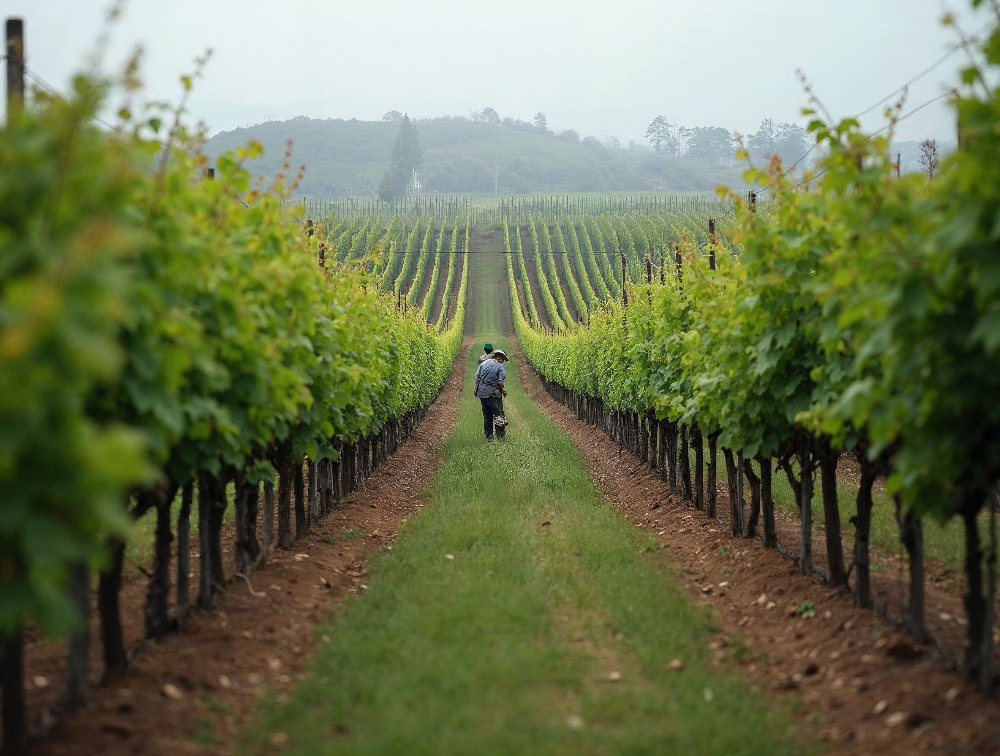

Tierra
Datos
Gestión
Resultados
Datos
Gestión
Resultados
LinkedIn: gestión, resultados y pensamiento experto
No es Instagram en horizontal
En LinkedIn Landera le habla a quien invierte. Manda el comportamiento gestión: casos, resultados, mapas y criterio.
Seis tipos de publicación
Caso de gestión — foto del predio y la cifra que lo explica. Resultado — una cifra editorial con contexto. Mapa — el paño de predios con su lista. Gráfico — uno de la lámina 23. Pensamiento — un párrafo firmado sobre tinta. Territorio — foto limpia con pie.
La proporción
Gestión y resultado 50 % · pensamiento 20 % · territorio 20 % · institucional 10 %. Un carrusel al mes con un caso completo.
El texto
Primera línea: el dato o la tesis. Hasta 900 caracteres, tres hashtags al final. Tono: seriedad antes que simpatía. El logotipo va en la imagen sólo cuando la pieza sale del feed (anuncio, PDF, carrusel).
Portada · 1584 × 396
Territorio con velo lateral · el avatar tapa la esquina inferior izquierda
Publicaciones · 1200 × 627

Caso de gestiónFoto del predio + la cifra que lo explica
ResultadoCifra editorial con su frase de contexto
MapaEl paño de predios con su lista; terracota al que desvía
GráficoUno de la lámina 23; el último punto en tinta
Pensamiento expertoUn párrafo firmado sobre tinta, Light, entre comillas

TerritorioFoto limpia con pie; el logotipo no hace falta
Carrusel mensual
Un caso completo en 6 láminas: territorio · el predio · la cifra · el gráfico · qué se hizo · cierre con contacto. Primera lámina con foto, última con logotipo.
Caso de inversión
Lleva al memo de la lámina 31: portada crema y botón «Descargar PDF».
Invariables
Variables
30 · Ecosistema digital
Landera · Manual de marca